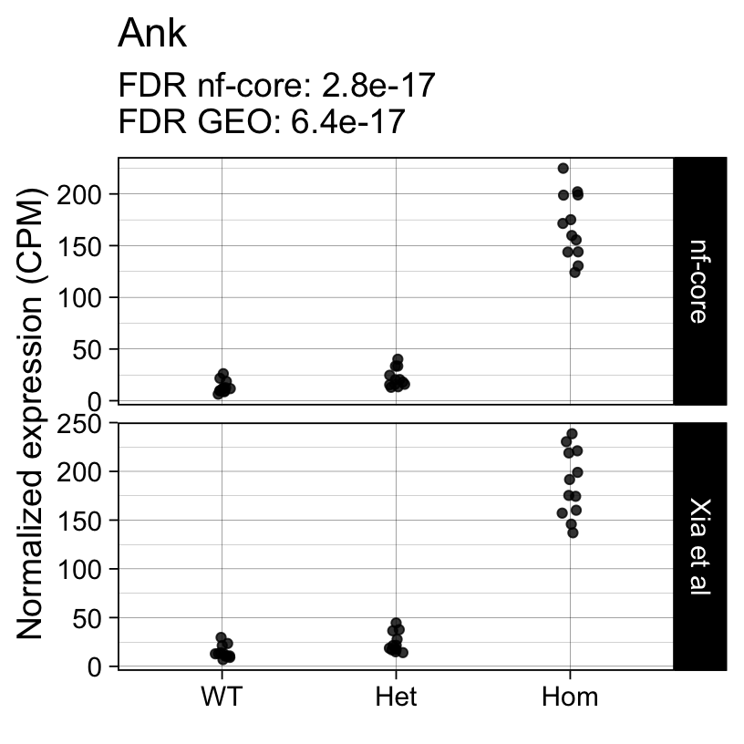
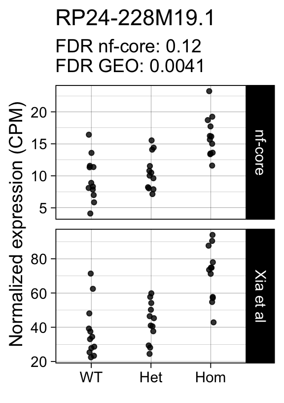
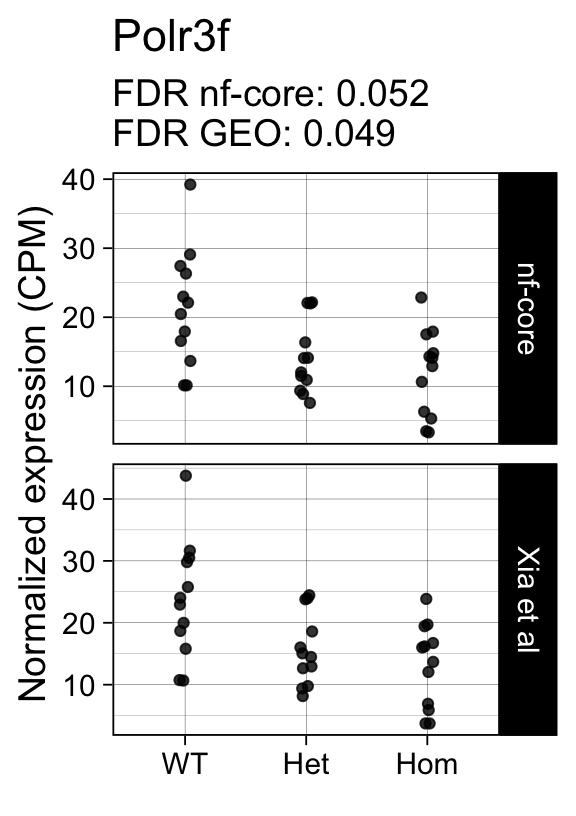
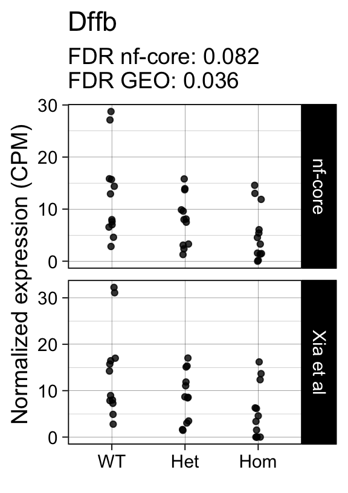
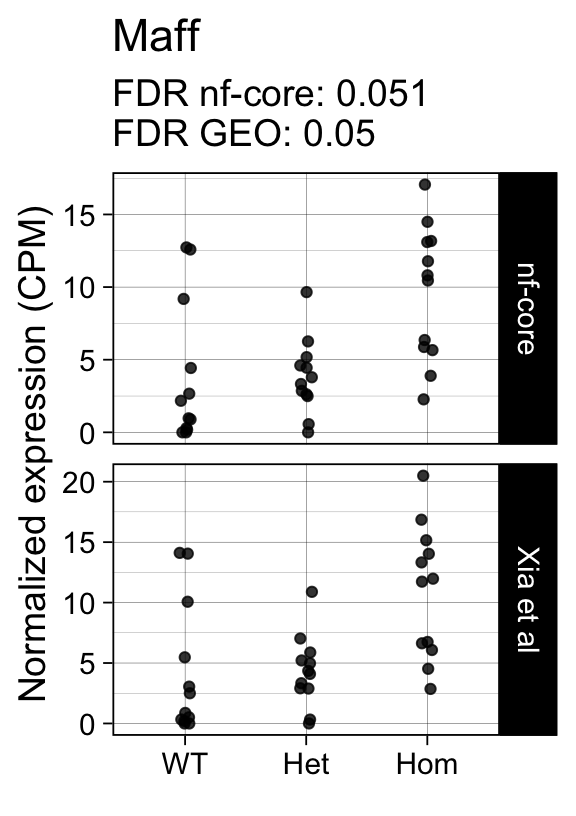

library(dplyr)
library(edgeR)
library(ggplot2)
library(here)
library(org.Mm.eg.db)
library(readxl)
library(SummarizedExperiment)
library(tibble)
library(tidyr)
Note
This is the third of four posts documenting my progress toward processing and analyzing QuantSeq FWD 3’ tag RNAseq data with the nf-core/rnaseq workflow.
- Configuring & executing the nf-core/rnaseq workflow
- Exploring the workflow outputs
- Validating the workflow by reproducing results published by Xia et al (no UMIs)
- Validating the workflow by reproducing results published by Nugent et al (including UMIs)
Many thanks to Harshil Patel, António Miguel de Jesus Domingues and Matthias Zepper for their generous guidance & input via nf-core slack. (Any mistakes are mine.)
tl;dr
- This analysis compares the performance of the nf-core/rnaseq workflow for QuantSeq FWD 3’ tag RNAseq data without unique molecular identifiers.
- The differential expression analysis results are highly concordant with those obtained in the original publication.
- With the appropriate settings, the nf-core/rnaseq workflow is a valid data processing pipeline for this data type.
The first post in this series walked through the preprocesssing of QuantSeq FWD data published in a preprint by Xia et al.
Next, we use Bioconductor/R packages to reproduce the downstream results. We perform the same differential gene expression analysis twice with either
- the original counts matrix published by the authors 1
- the output of the nf-core/rnaseq workflow
Sample annotations
We start by retrieving the sample annotation table, listing e.g. the sex, and genotype for each mouse, and the batch for each collected sample.
This information is available in the SRA Run Explorer. (I saved it as the sample_metadata.csv CSV file in case you want to follow along.)
sample_sheet <- file.path(work_dir, "sample_metadata.csv")
sample_anno <- read.csv(sample_sheet, row.names = "Experiment")
head(sample_anno[, c("Run", "Animal.ID", "Age", "age_unit", "Batch", "sex",
"Genotype", "Sample.Name")]) Run Animal.ID Age age_unit Batch sex Genotype Sample.Name
SRX9142648 SRR12661924 LA1 8 months Day1 male WT GSM4793335
SRX9142649 SRR12661925 LA1 8 months Day1 male WT GSM4793336
SRX9142650 SRR12661926 LA6 8 months Day1 male WT GSM4793337
SRX9142651 SRR12661927 LA6 8 months Day1 male WT GSM4793338
SRX9142652 SRR12661928 LA9 8 months Day2 male WT GSM4793339
SRX9142653 SRR12661929 LA9 8 months Day2 male WT GSM4793340Because our SRA metadata doesn’t include the GEO sample title, I saved the identifier mappings in the GEO_sample_ids.csv CSV file.
geo_ids <- read.csv(file.path(work_dir, "GEO_sample_ids.csv"))
head(geo_ids) sample_name sample_id
1 GSM4793335 DRN-18429
2 GSM4793336 DRN-18430
3 GSM4793337 DRN-18439
4 GSM4793338 DRN-18440
5 GSM4793339 DRN-18445
6 GSM4793340 DRN-18446Code
colnames(sample_anno)<- tolower(colnames(sample_anno))
colnames(sample_anno) <- sub(".", "_", colnames(sample_anno),
fixed = TRUE)
sample_anno <- sample_anno[, c("sample_name", "animal_id", "genotype", "sex",
"batch")]
sample_anno$genotype <- factor(sample_anno$genotype,
levels = c("WT", "Het", "Hom"))
sample_anno$sample_title <- geo_ids[
match(sample_anno$sample_name, geo_ids$sample_name), "sample_id"]
head(sample_anno) sample_name animal_id genotype sex batch sample_title
SRX9142648 GSM4793335 LA1 WT male Day1 DRN-18429
SRX9142649 GSM4793336 LA1 WT male Day1 DRN-18430
SRX9142650 GSM4793337 LA6 WT male Day1 DRN-18439
SRX9142651 GSM4793338 LA6 WT male Day1 DRN-18440
SRX9142652 GSM4793339 LA9 WT male Day2 DRN-18445
SRX9142653 GSM4793340 LA9 WT male Day2 DRN-18446This experiment includes 36 samples of microglia cells obtained from 18 different 8-month old mice. Both male and female animals were included in the study.
The animals carry one of three different genotypes of the gene encoding the APP amyloid beta precursor protein, either
- the wildtype mouse gene (
WT) or - one copy (
Het) or - two copies (
Hom)
of a mutant APP gene carrying mutations associated with familial Alzheimer’s Disease.
Samples from all three genotypes were collected on three days, and we will use this batch information to model the experiment.
Two separate microglia samples were obtained from each animal, and we will include this nested relationship by modeling the animal as random effect in our linear model.
Xia et al’s original count data
First, we retrieve the authors’ count matrix from NCBI GEO, available as a Supplementary Excel file.
url <- paste0("https://www.ncbi.nlm.nih.gov/geo/download/?acc=GSE158152&",
"format=file&file=GSE158152%5Fdst150%5Fprocessed%2Exlsx")
temp_file <- tempfile(fileext = ".xlsx")
download.file(url, destfile = temp_file)The Excel file has three different worksheets
sample_annotationsraw_countsnormalized_cpm
raw_counts <- read_excel(temp_file, sheet = "raw_counts")
head(colnames(raw_counts), 10) [1] "feature_id" "name" "meta" "source" "symbol"
[6] "DRN-18429" "DRN-18430" "DRN-18439" "DRN-18440" "DRN-18445" The raw_counts excel sheet contains information about the detected genes ( feature_ID, name) and the samples are identified by their GEO title (e.g. DRN-18459, DRN-184560). We use the raw counts to populate a new DGEList object and perform Library Size Normalization with the TMM approach.
Code
count_data <- as.matrix(raw_counts[, grep("DRN-", colnames(raw_counts))])
row.names(count_data) <- raw_counts$feature_id
colnames(count_data) <- row.names(sample_anno)[
match(colnames(count_data), sample_anno$sample_title)
]
gene_data <- data.frame(
gene_id = raw_counts$feature_id,
gene_name = raw_counts$symbol,
row.names = raw_counts$feature_id
)
col_data <- data.frame(
sample_anno[colnames(count_data),
c("sample_title", "animal_id", "sex", "genotype", "batch")],
workflow = "geo"
)
dge <- DGEList(
counts = as.matrix(count_data),
samples = col_data[colnames(count_data), ],
genes = gene_data[row.names(count_data), ]
)
dge <- calcNormFactors(dge, method = "TMM")Next, we project the samples into two dimensions by performing multi-dimensional scaling of the top 500 most variable genes. The samples cluster by genotype, with WT and Het segregating from the Hom samples.
plotMDS(dge, labels = dge$samples$genotype,
main = "Multi-dimensional scaling",
sub = "Based on the top 500 most variable genes")Let’s identify which genes are significantly differentially expressed between the three genotypes!
Linear modeling with limma/voom
First, we use the edgeR::filterByExpr() function to identify genes with sufficiently large counts to be examined for differential expression. (The min.count = 25 parameter was determined by examining the mean-variance plot by the voomLmFit() function.)
design <- model.matrix(~ genotype + sex + batch, data = dge$samples)
colnames(design) <- sub("genotype", "", colnames(design))
keep <- filterByExpr(dge, design = design, min.count = 25)Next, we fit a linear model to the data using the limma/voom approach. The model includes the following fixed effects:
- The
genotypecoded as a factor with theWTas the reference level. - The
sexandbatchcovariates, to account for systematic differences in mean gene expression.
Because the dataset included two replicate samples from each animal, we model the animal as a random effect (via the block argument of the voomLmFit() function). We then extract the coefficients, log2 fold changes and p-values via limma’s empirical Bayes approach.
Note
We use the limma::treat() function to test the null hypothesis that genes display significant differential expression greater than 1.2-fold. This is more stringent than the conventional null hypothesis of zero change. (Please consult the limma::treat() help page for details.)
fit <- voomLmFit(
dge[keep, row.names(design)],
design = design,
block = dge$samples$animal_id,
sample.weights = TRUE,
plot = FALSE
)
fit <- treat(fit, robust=TRUE)The following table displays the number of differentially up- and down-regulated genes after applying a false-discovery (adj.P.Val) threshold of 5%. While we did not detect significant differences between Het and WT animals, the analysis revealed > 450 differentially expressed genes between Hom and WT microglia.
summary(decideTests(fit))[, c("Het", "Hom")] Het Hom
Down 0 73
NotSig 10131 9660
Up 0 398The top 10 genes with the smallest p-values include well known markers of microglia activation:
topTreat(fit, coef = "Hom")[, c("gene_name", "logFC", "P.Value", "adj.P.Val")] gene_name logFC P.Value adj.P.Val
ENSMUSG00000027523 Gnas 1.5904760 3.467080e-24 3.512499e-20
ENSMUSG00000022265 Ank 3.7866023 1.258687e-20 6.375881e-17
ENSMUSG00000021477 Ctsl 1.2829086 2.294556e-20 7.748717e-17
ENSMUSG00000018927 Ccl6 2.7405831 3.514945e-20 8.902477e-17
ENSMUSG00000030579 Tyrobp 1.2880854 9.748473e-19 1.975236e-15
ENSMUSG00000022415 Syngr1 1.5033949 1.367158e-18 2.308446e-15
ENSMUSG00000016256 Ctsz 1.1557870 2.878895e-18 4.166584e-15
ENSMUSG00000023992 Trem2 0.9460719 7.386805e-18 9.354465e-15
ENSMUSG00000056737 Capg 2.4537482 1.927765e-17 2.170021e-14
ENSMUSG00000030342 Cd9 1.0596747 1.328189e-16 1.328093e-13Next we repeat the same analysis with the output of the nf-core/rnaseq workflow.
nf-core/rnaseq results
We start with the raw counts contained in the salmon.merged.gene_counts.rds file generated by the nf-core/rnaseq workflow.
Note
The nf-core pipeline returned the versioned ENSEMBL gene identifiers (e.g.) ENSMUSG00000000001.4. Because Xia et al only provided the unversioned identifiers (e.g. ENSMUSG00000000001) we trim the numeric suffix.
We TMM-normalize the data, as before. (This step converts the SummarizedExperiment into a DGEList object as well.)
count_file <- file.path(work_dir, "salmon.merged.gene_counts.rds")
se <- readRDS(count_file)
row.names(se) <- sapply(
strsplit(row.names(se), split = ".", fixed = TRUE), "[[", 1)
stopifnot(all(colnames(se) %in% row.names(sample_anno)))
dge_nfcore <- calcNormFactors(se, method = "TMM")Next, we add the sample metadata and fit the same linear model as before.
Code
dge_nfcore$genes$gene_id <- row.names(dge_nfcore)
dge_nfcore$samples <- data.frame(
dge_nfcore$samples,
sample_anno[colnames(dge_nfcore),
c("sample_title", "animal_id", "sex", "genotype", "batch")],
workflow = "nfcore"
)
stopifnot(all(colnames(dge) %in% colnames(dge_nfcore)))
dge_nfcore <- dge_nfcore[, colnames(dge)]
design <- model.matrix(~ genotype + sex + batch, data = dge_nfcore$samples)
colnames(design) <- sub("genotype", "", colnames(design))
keep <- filterByExpr(dge_nfcore, design = design, min.count = 25)
fit_nfcore <- voomLmFit(
dge_nfcore[keep, row.names(design)],
design = design,
block = dge_nfcore$samples$animal_id,
sample.weights = TRUE,
plot = FALSE
)First sample weights (min/max) 0.5573482/2.1680260First intra-block correlation 0.02339845Final sample weights (min/max) 0.5367708/2.2366196Final intra-block correlation 0.02354808Code
fit_nfcore <- treat(fit_nfcore, robust=TRUE)As with the original count data from NCBI GEO, we detect > 450 differentially expressed genes between Hom and WT genotypes (FDR < 5%, null hypothesis: fold change > 1.2).
summary(decideTests(fit_nfcore))[, c("Het", "Hom")] Het Hom
Down 0 76
NotSig 10428 9917
Up 0 435Comparing results across preprocessing workflows
Next, we compare the results obtained with the two datasets. We create the cpms and tt dataframes, holding the combined absolute and differential expression results, respectively.
Code
cpms <- local({
geo <- cpm(dge, normalized.lib.sizes = TRUE) %>%
as.data.frame() %>%
cbind(dge$genes) %>%
pivot_longer(cols = starts_with("SRX"),
names_to = "sample_name",
values_to = "cpm") %>%
dplyr::left_join(
tibble::rownames_to_column(dge$samples, "sample_name"),
by = "sample_name"
) %>%
dplyr::mutate(dataset = "Xia et al")
nfcore <- cpm(dge_nfcore, normalized.lib.sizes = TRUE) %>%
as.data.frame() %>%
cbind(dge_nfcore$genes) %>%
pivot_longer(cols = starts_with("SRX"),
names_to = "sample_name",
values_to = "cpm") %>%
dplyr::left_join(
tibble::rownames_to_column(dge_nfcore$samples, "sample_name"),
by = "sample_name"
) %>%
dplyr::mutate(dataset = "nf-core")
dplyr::bind_rows(
dplyr::select(geo, any_of(intersect(colnames(geo), colnames(nfcore)))),
dplyr::select(nfcore, any_of(intersect(colnames(geo), colnames(nfcore))))
)
})
tt <- rbind(
topTreat(fit, coef = "Hom", number = Inf)[
, c("gene_id", "gene_name", "logFC", "P.Value", "adj.P.Val")] %>%
dplyr::mutate(dataset = "geo"),
topTreat(fit_nfcore, coef = "Hom", number = Inf)[
, c("gene_id", "gene_name", "logFC", "P.Value", "adj.P.Val")] %>%
dplyr::mutate(dataset = "nfcore")
) %>%
dplyr::mutate(adj.P.Val = signif(adj.P.Val, 2)) %>%
tidyr::pivot_wider(
id_cols = c("gene_id", "gene_name"),
names_from = "dataset",
values_from = "adj.P.Val") %>%
dplyr::arrange(nfcore) %>%
as.data.frame() %>%
tibble::column_to_rownames("gene_id")Normalized expression
First, we examine the correlation between the normalized log-transformed gene expression estimates returned from the two workflows. We focus on those genes that passed the filterByExpr thresholds above, e.g. those genes deemed sufficiently highly expressed to be assessed for differential expression.
Code
common_genes <- intersect(row.names(fit), row.names(fit_nfcore))
sum_stats <- cpms %>%
dplyr::filter(gene_id %in% common_genes) %>%
tidyr::pivot_wider(
id_cols = c("gene_id", "sample_name"),
values_from = "cpm",
names_from = "dataset") %>%
dplyr::group_by(gene_id) %>%
dplyr::summarise(
r = cor(log1p(`Xia et al`), log1p(`nf-core`)),
mean_xia = mean(`Xia et al`),
mean_nfcore = mean(`nf-core`))
p <- ggplot(data = sum_stats, aes(x = r)) +
geom_histogram(bins = 50) +
scale_x_continuous(limits = c(0, 1.02), breaks = seq(0, 1, by = 0.2)) +
labs(x = "Pearson correlation coefficient (R)",
y = "Number of genes",
title = "Correlation between normalized log2 counts") +
theme_linedraw(14)
print(p)The correlation between normalized log2 expression estimates is very high, with 95% of all genes showing a Pearson correlation coefficient > 0.94.
Most of the 10022 examined genes were detected with > 10 normalized counts per million reads.
p <- ggplot(data = sum_stats, aes(x = mean_xia + 1)) +
geom_histogram(bins = 50) +
scale_x_continuous(trans = scales::log10_trans(),
labels = scales::comma_format()) +
labs(x = "Mean normalized counts per million",
y = "Number of genes",
title = "Average expression",
subtitle = "Xia et al") +
theme_linedraw(14)
print(p)Next, we will examine the results of the differential expression analysis.
Differential expression results
Analyses based on either preprocessing pipeline yield similar numbers of differentially expressed genes.
Code
results <- cbind(
decideTests(fit)[common_genes, "Hom"],
decideTests(fit_nfcore)[common_genes, "Hom"]
)
colnames(results) <- c("Xia et al", "nf-core")
class(results) <- "TestResults"
summary(results) Xia et al nf-core
-1 73 75
0 9554 9528
1 395 419But are these the same genes in both sets of results?
We can visualize the overlap between the sets of significant genes in a Venn diagram (FDR < 5%). The vast majority of differentially expressed genes is detected with both quantitation approaches (for both up- and down-regulated genes.)
limma::vennDiagram(results, include = c("up", "down"),
counts.col=c("red", "blue"), mar = rep(0,4))For example, the following plots show the normalized expression of a few highly differentially expressed genes (known markers of active microglia).
Code
for (gene in topTreat(fit, coef = "Hom", number = 6)[["gene_id"]]) {
p <- cpms %>%
dplyr::filter(gene_id == gene) %>%
ggplot(aes(x = genotype, y = cpm)) +
geom_point(position = position_jitter(width = 0.05), alpha = 0.8) +
facet_grid(dataset ~ ., scales = "free") +
labs(title = dge$genes[gene, "gene_name"],
y = "Normalized expression (CPM)",
x = element_blank(),
subtitle = sprintf("FDR nf-core: %s\nFDR GEO: %s",
tt[gene, "nfcore"],
tt[gene, "geo"]
)
) +
theme_linedraw(14)
print(p)
}
Applying a hard FDR threshold can inflate the number of apparent differences, e.g. when a gene is close to the significance threshold (see below).
p_cor <- cor(
fit$coefficients[common_genes, "Hom"],
fit_nfcore$coefficients[common_genes, "Hom"])The log2 fold estimates for the Hom vs WT comparison are highly correlated across the two analysis workflows (Pearson correlation coefficient R = 0.99 ):
smoothScatter(
fit$coefficients[common_genes, "Hom"],
fit_nfcore$coefficients[common_genes, "Hom"],
ylab = "nf-core (log2FC)",
xlab = "Xia et al (log2FC)",
main = "Homozygous APP vs WT (effect size)"
)
text(x = 10, y = -2, labels = sprintf("R = %s", signif(p_cor, 2)))
abline(0, 1)
abline(h = 0, v = 0, lty = 2)as are the t-statistics across all examined genes:
p_cor <- cor(
fit$t[common_genes, "Hom"],
fit_nfcore$t[common_genes, "Hom"])
smoothScatter(
fit$t[common_genes, "Hom"],
fit_nfcore$t[common_genes, "Hom"],
ylab = "nf-core (t-statistic)",
xlab = "Xia et al (t-statistic)",
main = "Homozygous APP vs WT (t-statistic)")
text(x = 10, y = -2, labels = sprintf("R = %s", signif(p_cor, 2)))
abline(0, 1)
abline(h = 0, v = 0, lty = 2)Discordant significance calls
# genes detected in GEO, but not significant with nf-core
genes <- row.names(results)[which(abs(results[, 1]) == 1 & results[, 2] == 0)]At FDR < 5% 14 genes were reported as significantly differentially expressed with the original Xia et al count matrix but not with the output of the nf-core/rnaseq workflow.
As side-by-side comparison of the FDR (adj.P.Val) for these genes confirms that the vast majority display significant close to the 5% threshold in the nf-core/rnaseq output as well. (This is in line with the high overall correlation of the t-statistics observed above.)
print(tt[genes, ]) gene_name geo nfcore
ENSMUSG00000078193 RP24-228M19.1 0.0041 0.120
ENSMUSG00000027427 Polr3f 0.0490 0.052
ENSMUSG00000028394 Pole3 0.0480 0.073
ENSMUSG00000029027 Dffb 0.0360 0.082
ENSMUSG00000029649 Pomp 0.0430 0.056
ENSMUSG00000054404 Slfn5 0.0440 0.064
ENSMUSG00000050965 Prkca 0.0310 0.087
ENSMUSG00000020641 Rsad2 0.0440 0.063
ENSMUSG00000021057 Akap5 0.0260 0.074
ENSMUSG00000115230 RP24-123O20.1 0.0400 0.061
ENSMUSG00000042622 Maff 0.0500 0.051
ENSMUSG00000050410 Tcf19 0.0500 0.051
ENSMUSG00000059040 Eno1b 0.0290 0.410
ENSMUSG00000042712 Tceal9 0.0480 0.054Finally, we plot the normalized gene expression estimates for the 14 discordant genes.
Code
for (gene in genes) {
p <- cpms %>%
dplyr::filter(gene_id == gene) %>%
ggplot(aes(x = genotype, y = cpm)) +
geom_point(position = position_jitter(width = 0.05), alpha = 0.8) +
facet_grid(dataset ~ ., scales = "free") +
labs(title = dge$genes[gene, "gene_name"],
y = "Normalized expression (CPM)",
x = element_blank(),
subtitle = sprintf("FDR nf-core: %s\nFDR GEO: %s",
tt[gene, "nfcore"],
tt[gene, "geo"]
)
) +
theme_linedraw(14)
print(p)
}



Conclusions
- Differential expression analyses of raw counts obtained with the
nc-core/rnaseqworkflow yields results that are highly concordant with those obtained with the raw counts the authors deposited in NCBI GEO. - With appropriate parameters the
nf-core/rnaseqworkflow can be applied to QuantSeq FWD 3’tag RNA-seq data.
Reproducibility
SessionInfo
─ Session info ───────────────────────────────────────────────────────────────
setting value
version R version 4.2.2 (2022-10-31)
os macOS Big Sur ... 10.16
system x86_64, darwin17.0
ui X11
language (EN)
collate en_US.UTF-8
ctype en_US.UTF-8
tz America/Los_Angeles
date 2023-01-16
pandoc 2.19.2 @ /Applications/RStudio.app/Contents/MacOS/quarto/bin/tools/ (via rmarkdown)
─ Packages ───────────────────────────────────────────────────────────────────
package * version date (UTC) lib source
AnnotationDbi * 1.60.0 2022-11-01 [1] Bioconductor
askpass 1.1 2019-01-13 [1] CRAN (R 4.2.0)
assertthat 0.2.1 2019-03-21 [1] CRAN (R 4.2.0)
Biobase * 2.58.0 2022-11-01 [1] Bioconductor
BiocGenerics * 0.44.0 2022-11-01 [1] Bioconductor
Biostrings 2.66.0 2022-11-01 [1] Bioconductor
bit 4.0.5 2022-11-15 [1] CRAN (R 4.2.0)
bit64 4.0.5 2020-08-30 [1] CRAN (R 4.2.0)
bitops 1.0-7 2021-04-24 [1] CRAN (R 4.2.0)
blob 1.2.3 2022-04-10 [1] CRAN (R 4.2.0)
cachem 1.0.6 2021-08-19 [1] CRAN (R 4.2.0)
cellranger 1.1.0 2016-07-27 [1] CRAN (R 4.2.0)
cli 3.5.0 2022-12-20 [1] CRAN (R 4.2.0)
colorspace 2.0-3 2022-02-21 [1] CRAN (R 4.2.0)
crayon 1.5.2 2022-09-29 [1] CRAN (R 4.2.0)
credentials 1.3.2 2021-11-29 [1] CRAN (R 4.2.0)
DBI 1.1.3 2022-06-18 [1] CRAN (R 4.2.0)
DelayedArray 0.24.0 2022-11-01 [1] Bioconductor
digest 0.6.31 2022-12-11 [1] CRAN (R 4.2.0)
dplyr * 1.0.10 2022-09-01 [1] CRAN (R 4.2.0)
edgeR * 3.40.1 2022-12-14 [1] Bioconductor
ellipsis 0.3.2 2021-04-29 [1] CRAN (R 4.2.0)
evaluate 0.19 2022-12-13 [1] CRAN (R 4.2.0)
fansi 1.0.3 2022-03-24 [1] CRAN (R 4.2.0)
farver 2.1.1 2022-07-06 [1] CRAN (R 4.2.0)
fastmap 1.1.0 2021-01-25 [1] CRAN (R 4.2.0)
generics 0.1.3 2022-07-05 [1] CRAN (R 4.2.0)
GenomeInfoDb * 1.34.4 2022-12-01 [1] Bioconductor
GenomeInfoDbData 1.2.9 2022-12-12 [1] Bioconductor
GenomicRanges * 1.50.2 2022-12-16 [1] Bioconductor
ggplot2 * 3.4.0 2022-11-04 [1] CRAN (R 4.2.0)
glue 1.6.2 2022-02-24 [1] CRAN (R 4.2.0)
gtable 0.3.1 2022-09-01 [1] CRAN (R 4.2.0)
here * 1.0.1 2020-12-13 [1] CRAN (R 4.2.0)
htmltools 0.5.4 2022-12-07 [1] CRAN (R 4.2.0)
htmlwidgets 1.5.4 2021-09-08 [1] CRAN (R 4.2.2)
httr 1.4.4 2022-08-17 [1] CRAN (R 4.2.0)
IRanges * 2.32.0 2022-11-01 [1] Bioconductor
jsonlite 1.8.4 2022-12-06 [1] CRAN (R 4.2.0)
KEGGREST 1.38.0 2022-11-01 [1] Bioconductor
KernSmooth 2.23-20 2021-05-03 [2] CRAN (R 4.2.2)
knitr 1.41 2022-11-18 [1] CRAN (R 4.2.0)
labeling 0.4.2 2020-10-20 [1] CRAN (R 4.2.0)
lattice 0.20-45 2021-09-22 [2] CRAN (R 4.2.2)
lifecycle 1.0.3 2022-10-07 [1] CRAN (R 4.2.0)
limma * 3.54.0 2022-11-01 [1] Bioconductor
locfit 1.5-9.6 2022-07-11 [1] CRAN (R 4.2.0)
magrittr 2.0.3 2022-03-30 [1] CRAN (R 4.2.0)
Matrix 1.5-3 2022-11-11 [1] CRAN (R 4.2.0)
MatrixGenerics * 1.10.0 2022-11-01 [1] Bioconductor
matrixStats * 0.63.0 2022-11-18 [1] CRAN (R 4.2.0)
memoise 2.0.1 2021-11-26 [1] CRAN (R 4.2.0)
munsell 0.5.0 2018-06-12 [1] CRAN (R 4.2.0)
openssl 2.0.5 2022-12-06 [1] CRAN (R 4.2.0)
org.Mm.eg.db * 3.16.0 2022-12-29 [1] Bioconductor
pillar 1.8.1 2022-08-19 [1] CRAN (R 4.2.0)
pkgconfig 2.0.3 2019-09-22 [1] CRAN (R 4.2.0)
png 0.1-8 2022-11-29 [1] CRAN (R 4.2.0)
purrr 1.0.0 2022-12-20 [1] CRAN (R 4.2.0)
R6 2.5.1 2021-08-19 [1] CRAN (R 4.2.0)
Rcpp 1.0.9 2022-07-08 [1] CRAN (R 4.2.0)
RCurl 1.98-1.9 2022-10-03 [1] CRAN (R 4.2.0)
readxl * 1.4.1 2022-08-17 [1] CRAN (R 4.2.0)
rlang 1.0.6 2022-09-24 [1] CRAN (R 4.2.0)
rmarkdown 2.19 2022-12-15 [1] CRAN (R 4.2.0)
rprojroot 2.0.3 2022-04-02 [1] CRAN (R 4.2.0)
RSQLite 2.2.19 2022-11-24 [1] CRAN (R 4.2.0)
rstudioapi 0.14 2022-08-22 [1] CRAN (R 4.2.0)
S4Vectors * 0.36.1 2022-12-05 [1] Bioconductor
scales 1.2.1 2022-08-20 [1] CRAN (R 4.2.0)
sessioninfo 1.2.2 2021-12-06 [1] CRAN (R 4.2.0)
statmod 1.4.37 2022-08-12 [1] CRAN (R 4.2.0)
stringi 1.7.8 2022-07-11 [1] CRAN (R 4.2.0)
stringr 1.5.0 2022-12-02 [1] CRAN (R 4.2.0)
SummarizedExperiment * 1.28.0 2022-11-01 [1] Bioconductor
sys 3.4.1 2022-10-18 [1] CRAN (R 4.2.0)
tibble * 3.1.8 2022-07-22 [1] CRAN (R 4.2.0)
tidyr * 1.2.1 2022-09-08 [1] CRAN (R 4.2.0)
tidyselect 1.2.0 2022-10-10 [1] CRAN (R 4.2.0)
utf8 1.2.2 2021-07-24 [1] CRAN (R 4.2.0)
vctrs 0.5.1 2022-11-16 [1] CRAN (R 4.2.0)
withr 2.5.0 2022-03-03 [1] CRAN (R 4.2.0)
xfun 0.35 2022-11-16 [1] CRAN (R 4.2.0)
XVector 0.38.0 2022-11-01 [1] Bioconductor
yaml 2.3.6 2022-10-18 [1] CRAN (R 4.2.0)
zlibbioc 1.44.0 2022-11-01 [1] Bioconductor
[1] /Users/sandmann/Library/R/x86_64/4.2/library
[2] /Library/Frameworks/R.framework/Versions/4.2/Resources/library
──────────────────────────────────────────────────────────────────────────────
This work is licensed under a Creative Commons Attribution 4.0 International License.
Footnotes
Full disclosure: I am a co-author of this publication.↩︎